Every student who walks in leaves a trail. This keeps it.
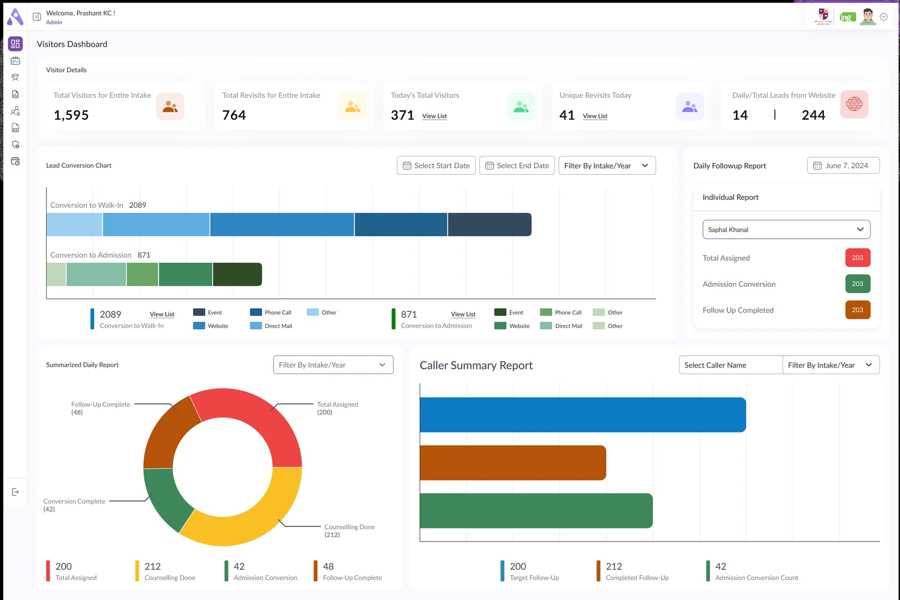
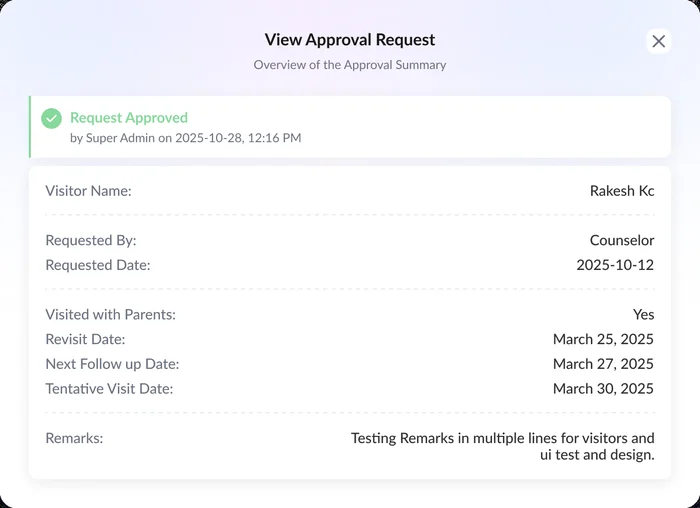
A student might be met at their school, call a week later, then walk in with their parents. CLMS gives each of those moments its own screen and links them, so whoever picks up the phone next can see what already happened.
My reading of how the screens connect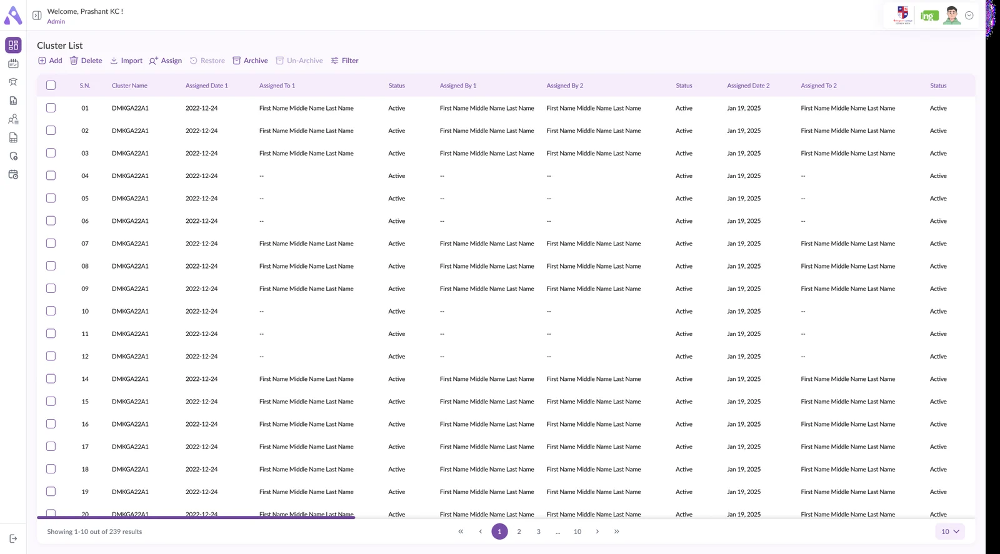
The dashboard leads with visitor counts, then one chart that answers the question an admissions lead actually asks: of everyone who walked in, how many enrolled, and which channel brought them?
All figures are sample data in the design.
Bars redrawn from the chart: Other, Direct Mail, Website, Phone Call and Event.
Clusters, leads and visitors are different records, but they're worked the same way. Each list opens with a row of plain text actions using the same words and icons, so a counsellor who knows one list knows all three.
Read from one version of each toolbar| Action | Clusters | Leads | Visitors |
|---|
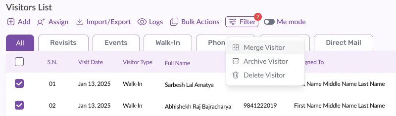
Tick two visitors and Bulk Actions offers Merge Visitor. A student who phoned and later walked in shows up under both channels, and their profile carries tags for each one.
Archive and delete both have a way back. Restore and Unarchive open the same searchable table in a modal, with Back on the left and one purple action on the right. Only the title and the button change.
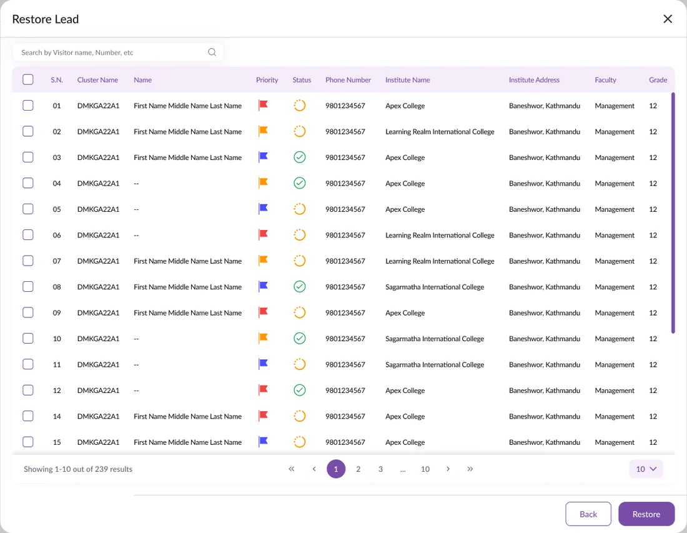
Records change hands a lot: a cluster is assigned, reassigned, finished. Two patterns keep the history readable without anyone writing a report.
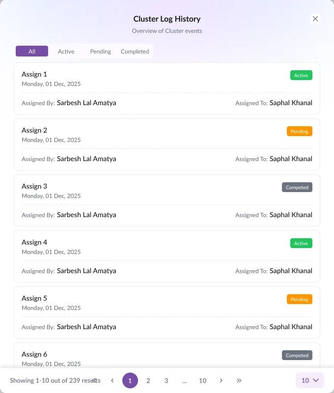
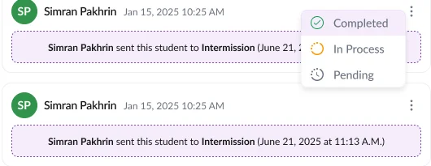
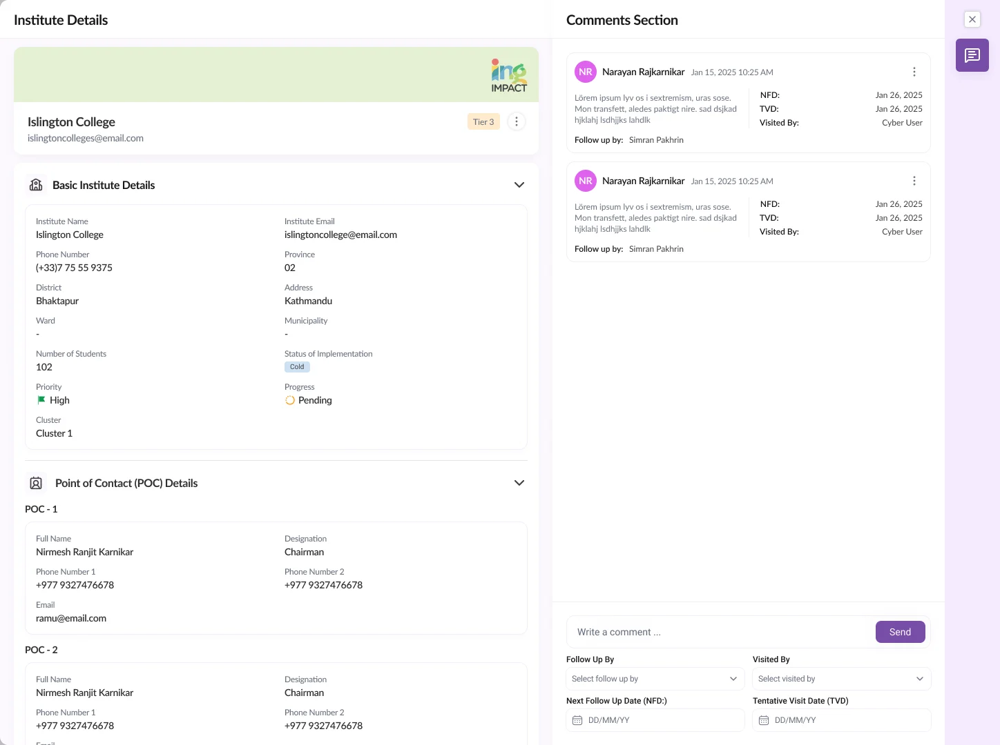
Staff in the field can ask to change a record, but an admin signs it off. The request travels from a red dot in the profile menu to a decision that's stamped with who made it.
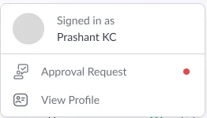
Tap a step to follow one request. Names and dates are sample content.
A lead carries a lot: the student, their parents, and where they came from. The forms group fields under plain headings so a long record still scans.
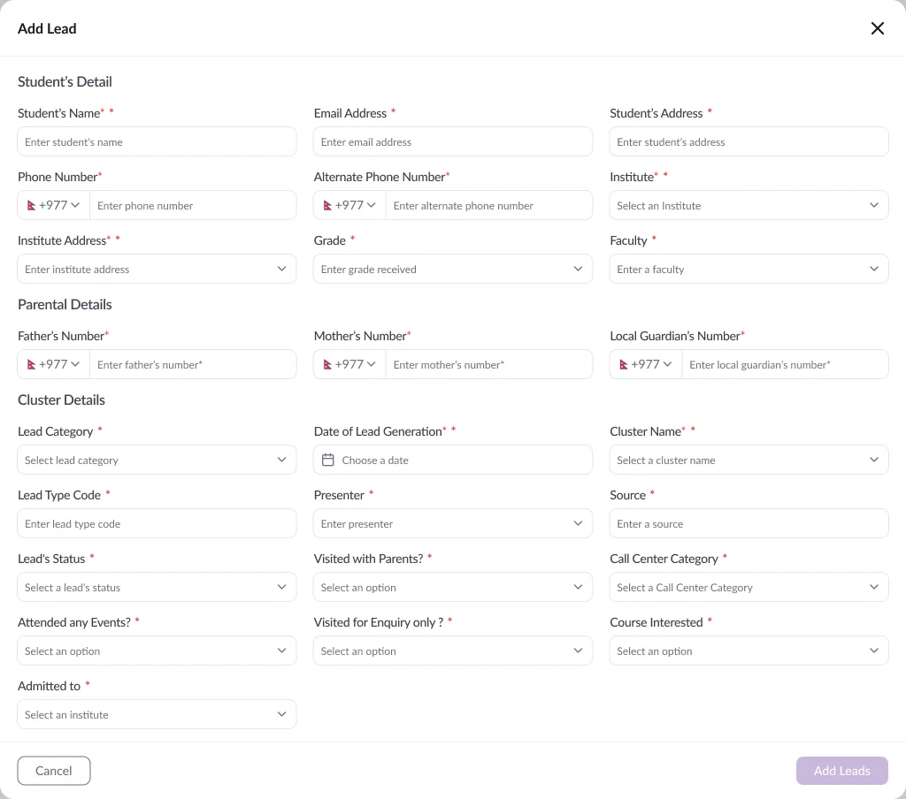
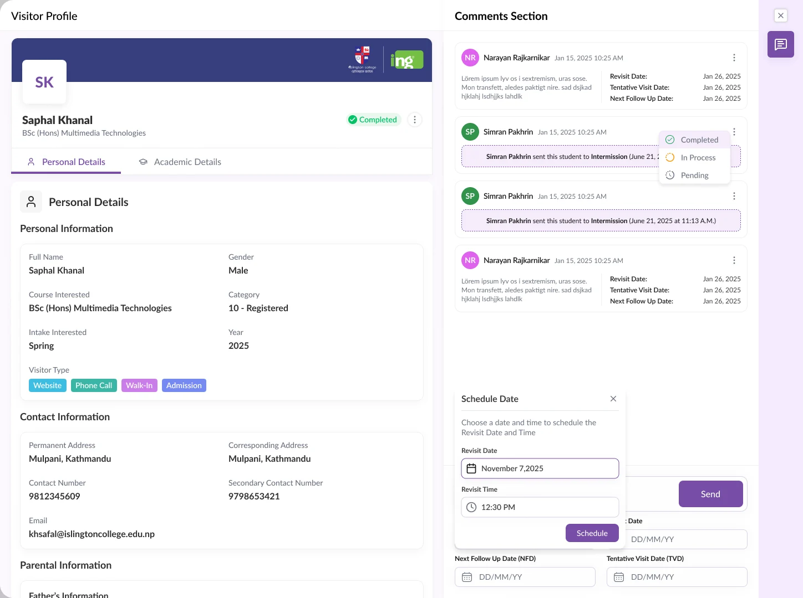
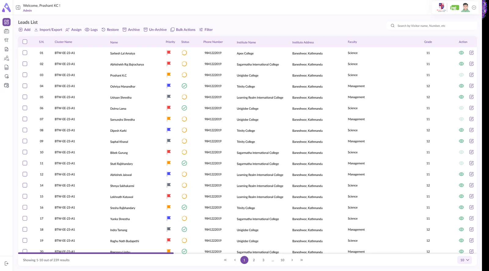
The shared toolbar, the logs and the approval trail give CLMS its backbone. These are the places I'd push further.